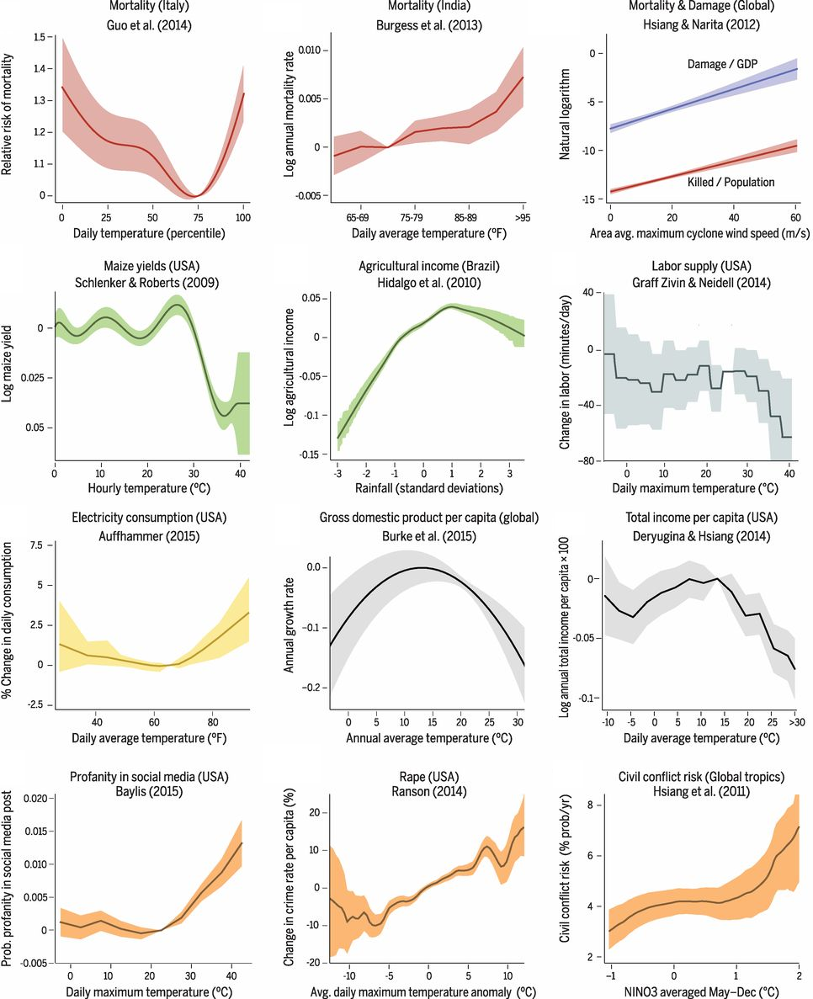

Introduction to the Tutorial#
The use of econometrics to study how social, economic, and biophysical systems respond to weather has started a torrent of new research. It is allowing us to better understand the impacts of climate change, disaster risk and responses, resource management, human behavior, and sustainable development. Here are some of the relationships that have been uncovered in recent years:
{kind=link}
Source: Carleton and Hsiang (2016).
Relationships like these that relate weather to socioeconomic outcomes are opening new questions even as they provide answers. In the figure above, there are response functions for mortality, agriculture, and conflict that have been estimated for both rich and poor countries. Interestingly, these often do not match up, and their differences can help us to better understand vulnerability and the potential for adaptation.
Many different functional forms are represented in the figure above, and behind these are many more decisions about the choice of weather variables, the handling of heterogeneity and variability, and how socioeconomics information can be mapped to geography.
While the challenges of climate econometrics are similar across all problems, the appropriate solutions to these problems are unique to each research question. No single sequence of steps or software can be widely applied for resolving these issues. Instead, this tutorial is aimed at helping you make decisions appropriate to your research.
Who is this tutorial for?#
This tutorial is created for students and researchers new to climate econometrics. However, it assumes a knowledge of panel econometric methods. You should be familiar with specifications that factor-out unobserved heterogeneity, flexible trends, weighted regressions, approaches to deal with heteroskedasticity and correlated errors, and diagnostics for efficiency problems. Some concepts in panel econometrics are more specific to weather regressions, such as dose-response curves, data-generating processes, and neighborhood effects, and we will cover those in this tutorial.
We also assume basic experience with one scientific programming language (Stata, R, Python, Matlab, Julia). In most examples, we provide code snippets in more than one programming language, so you can get started.
You should also already have a research question. There are plenty of ways to find important questions, and maybe we will try to offer a tutorial on that in the future.
What we hope you will learn#
This tutorial offers guidance that will help you contribute to climate econometrics research. It will walk you through the necessary steps in relating socioeconomic outcomes to weather data at high resolution. We will cover:
How to find and use weather data, and what you should be aware of when using it.
How to relate your socioeconomic outcomes to weather variables, and develop your regression specification.
How to work with shapefiles and use them to generate your predictor variables.
At the same time, this tutorial asks you to perform every step yourself. In particular, we do not provide prepared weather data or a ready-made script to prepare it. Each particular project is too specific, so you, the researcher, need to think through everything. This tutorial is aimed at helping you do that.
How to use this tutorial#
The tutorial is organized along the rough outline of a research project:
Weather and climate data: introduces environmental data and its attributes, the NetCDF file format, supported programming languages, and common limitations of the data.
Developing a reduced-form specification: provides a number of considerations before starting an analysis, such as choosing weather variables, functions for creating a model, and caveats when working with spatial and temporal processes.
Geographical unit data: introduces geographic information systems, shapefiles, and how to work with them effectively, and explains the importance of weighting schemes and how to work with them based on their file formats and origins.
Bringing it all together: offers a range of suggestions for organizing your work and producing final results.
You can go through the sections one at a time or reference them independently.
We also include a Hands-On Exercise, which takes you through each of these steps, from collecting data to producing a final weather relationship. Please note that this is just one example, and not a template for other research projects.
Most importantly, if you learn something in your own research process that you think would be of broad interest, see the contributor’s guide for how to include it here. Help us make this tutorial more useful for more people!
Useful introductory resources#
Here are some resources to read to understand climate econometrics. This tutorial is a kind of practical counterpart to these excellent documents.
- 📚 An Economist’s Guide to Climate Change Science
is a useful resource to better understand the basics of weather, climate, and the physical changes occurring in the climate system. If you have not had experience with climate (or meteorological) science, that is a great place to start.
- 📚 Climate Econometrics by Solomon Hsiang
gives a theoretical foundation for the work of estimating weather and climate responses. This tutorial complements the theoretical foundation with more practical advice.
📚 Check out the Encyclopedia of Earth and the IPCC WGI report (The Physical Science Basis) and WGII report (Impacts, Adaptation and Vulnerability) : for a more general introduction to the sciences of climate and climate impacts. Chapter 1 of the IPCC WGI report in particular provides useful background information on climate and climate modeling.
Definitions and conventions#
We will use the following terms throughout this tutorial.
Point data, region data, and gridded data#
The data being related in climate econometric studies comes in three forms:
Point data describes the conditions at a particular geographic point in space. For weather data, this is typically the location of a weather station or gauge. For socioeconomic data, it may be a field, factory, or household.
Region data describes an aggregate over an irregular space. Typical natural science regions include basins and water/land bodies. Socioeconomic region data is much more common though, with information provided for political units (e.g. municipalities), statistical units (e.g., census tracts), and jurisdictions (e.g., educational districts). Quantities are reported as a total across the entire regional unit. The region over which a data observation is provided is called its geographic unit.
Gridded data provides information on a regular grid, almost always either across latitude and longitude, but sometimes as distance north and east from a fixed point. Gridded data can come from remote sensing products or other models or analyses. In the latter case, it often is not clear exactly what is being measured (e.g., the point data at the grid center, or some kind of average over a rectangular region). Keeping information at a high resolution is important to avoid misusing such data.
It is usually preferable to analyze data in the spatial structure it is offered, even if translating it to another structure would be easier. We will discuss this more later.
Mathematical notation#
In many cases, it will be useful to describe how to describe how to work with weather variables irrespective of the specific data being represented. A common mathematical notation will help our discussion in the tutorial, and it is particularly useful to have some common subscripts. We will use the following notation:
\(X_{it}\): Any weather variable for geographic unit \(i\) in reporting period \(t\).
\(X_{ps}\): Point or grid-level weather data for location/grid cell \(p\), at a native temporal resolution indexed by \(s\).
For example, we will discuss how to translate gridded data (\(X_{ps}\)) into regional data (\(X_{it}\)). When we actually use this mathematical logic, we will often replace \(X\) with \(T\) for temperature and \(P\) for precipitation.